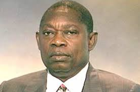
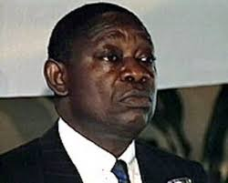
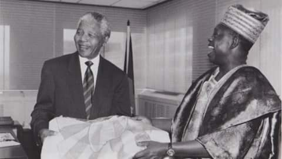
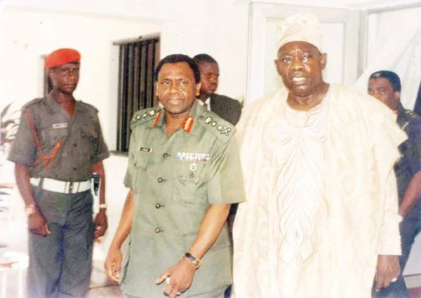
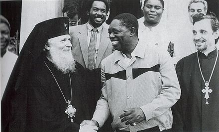

MKO interviewed by ChannelsTV
MKO portrait
MKO at a Press briefing (1992)
MKO with Nelson Mandela
MKO with Gen. Sani Abacha
MKO with Uruguayan clergy
Chief Moshood Kashimawo Olawale Abiola, CFR (24 August 1937 to 7 July 1998), often referred to as M. K. O. Abiola, was a popular Nigerian Yoruba businessman, publisher, politician and aristocrat of the Yoruba Egba clan. He ran for the presidency in 1993, and is widely regarded as the presumed winner of the inconclusive election since no official final results were announced. He died in 1998, after being denied victory when the entire election results were dubiously annulled by the preceding military president Ibrahim Babangida because of alleged evidence that they were
His name, Kashimawo, means "Let us wait and see". Moshood Abiola was his father's twenty-third child but the first of his father's children to survive infancy, hence the name 'Kashimawo'. It was not until he was 15 years old that he was properly named Moshood, by his parents.
MKO showed entrepreneurial talents at a very young age, at the age of nine he started his first business selling firewood. He would wake up at dawn to go to the forest and gather firewood, which he would then cart back to town and sell before going to school, to support his old father and his siblings. He later founded a band at age fifteen where he would perform at various ceremonies in exchange for food. He eventually became famous enough to start demanding payment for his performances and used the money to support his family and his secondary education at the Baptist Boys High School Abeokuta, where he excelled. He was the editor of the school magazine The Trumpeter, Olusegun Obasanjo was deputy editor. At the age of 19 he joined the National Council of Nigeria and the Cameroons ostensibly because of its stronger pan-Nigerian origin compared with the Obafemi Awolowo-led Action Group.
Moshood Abiola sprang to national and international prominence as a result of his philanthropic activities. The Congressional Black Caucus of the United States of America issued the following tribute to Moshood Abiola:
Because of this man, there is both cause for hope and certainty that the agony and protests of those who suffer injustice shall give way to peace and human dignity. The children of the world shall know the great work of this extraordinary leader and his fervent mission to right wrong, to do justice, and to serve mankind. The enemies which imperil the future of generations to come: poverty, ignorance, disease, hunger, and racism have each seen effects of the valiant work of Chief Abiola.
Through him and others like him, never again will freedom rest in the domain of the few. We, the members of the Congressional Black Caucus salute him this day as a hero in the global pursuit to preserve the history and the legacy of the African diaspora.
From 1972 until his death Moshood Abiola had been conferred with 197 traditional titles by 68 different communities in Nigeria, in response to the fact that his financial assistance resulted in the construction of:
He was also the grand patron to 149 societies or associations in Nigeria. In this way Abiola reached out and won admiration across the multifarious ethnic and religious divides in Nigeria.
In addition to his work in Nigeria, Moshood Abiola was a dedicated supporter of the Southern African Liberation movements from the 1970s and he sponsored the campaign to win reparations for slavery and colonialism in Africa and the diaspora. Chief Abiola, personally rallied every African head of state, and every head of state in the black diaspora to ensure that Africans would speak with one voice on the issues.
Moshood Abiola's Hope '93 political manifesto. For the 12 June 1993 presidential elections, Abiola's running mate was Baba Gana Kingibe. He overwhelmingly defeated his rival, Bashir Tofa of the National Republican Convention. The election was declared Nigeria's freest and fairest presidential election by national and international observers, with Abiola even winning in his Northern opponent's home state. Abiola won at the national capital, Abuja, the military polling stations, and over two-thirds of Nigerian states. The reason why the election was so historic, was because men of Northern descent had largely dominated Nigeria's political landscape since independence. The fact that Moshood Abiola (a Southern Muslim) was able to secure a national mandate freely and fairly remains unprecedented in Nigeria's history. However, the election was annulled by Ibrahim Babangida, a political crisis that ensued which led to General Sani Abacha seizing power later that year.[24] During preparations for the 2011 Nigerian Presidential elections there were calls from several quarters to remember MKO Abiola
Moshood Abiola leaving a Black Maria van under heavy armed guard. In 1994 Moshood Abiola declared himself the lawful president of Nigeria in the Epetedo area of Lagos island, an area mainly populated by (Yoruba) Lagos Indigenes. He had recently returned from a trip to win the support of the international community for his mandate. After declaring himself president he was declared wanted and was accused of treason and arrested on the orders of military President General Sani Abacha, who sent 200 police vehicles to bring him into custody. MKO Abiola has been referred to as Nigeria's greatest statesman.[25] His second wife Alhaja Kudirat Abiola was assassinated in Lagos in 1996 after declaring public support for her husband. Moshood Abiola was detained for four years, largely in solitary confinement with a Bible, Qur'an, and fourteen guards as companions. During that time, Pope John Paul II, Archbishop Desmond Tutu and human rights activists from all over the world lobbied the Nigerian government for his release. The sole condition attached to the release of Chief Abiola was that he renounce his mandate, something that he refused to do.
Abiola died under suspicious circumstances shortly after the death of General Abacha. Moshood Abiola died on the day that he was due to be released, on 7 July 1998.[27] While the official autopsy stated that Abiola died of natural causes, Abacha's Chief Security Officer, al-Mustapha has alleged that Moshood Abiola was in fact beaten to death. al-Mustapha, who was detained by the Nigerian government, but later released, claims to have video and audiotapes showing how Abiola was beaten to death. The final autopsy report, which was produced by a group of international coroners has never been publicly released.[28] Irrespective of the exact circumstances of his death, it is clear that Chief Abiola received insufficient medical attention for his existing health conditions. As recounted at the time in a BBC interview with special envoy Thomas R. Pickering, an American delegation, which included Susan Rice, visited Abiola and during their meeting with him, Abiola fell ill, with what was presumed to be a heart attack which caused his death.
A clause in Abiola's will required that his heirs could prove that he was their father. Over seventy people were able to show that Abiola was their father using DNA tests. Seven children were descended from his second wife, Alhaja Kudirat Abiola.